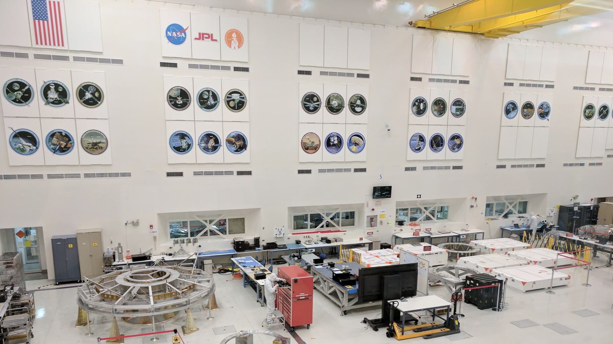

Since 2004, the Mars Opportunity Rover has relayed information back to Earth.
Telecommunications operators at NASA make tactical decisions
every day about where to drive the rover so that scientists may study the
surface of Mars. However, a number of conditions must be assessed before operators
can plot a route: Everything from the location of overpassing satellites to the
orientation of the rover to the topography of the Martian terrain can affect the quantity
of data available for transfer.
The existing tool used by operators was complex, time-consuming, and distributed across various interfaces. To improve this work process, we were asked to design a new data visualization tool.
Our final system was the subject of our paper, "Towards Design Principles for Visual Analytics in Operations Contexts", accepted to the ACM CHI '18 conference.
Note: This was one of three data visualization systems designed over a 10 week period for NASA and Caltech. Please reach out to learn more about designing for cybersecurity anomaly detection and 3D stem cell image segmentation.
Our client
The NASA Jet Propulsion Laboratory (JPL) is a federally-funded R&D center managed by
the neighboring California Institute of Technology. JPL is primarily responsible for building and
operating robotic spacecraft, but its functions also include Earth-orbit operations, astronomy missions,
and management of the Deep Space Network.

This project was sponsored by the NASA Jet Propulsion Laboratory, California Institute of Technology, and ArtCenter College of Design. For more information, please visit the program site.